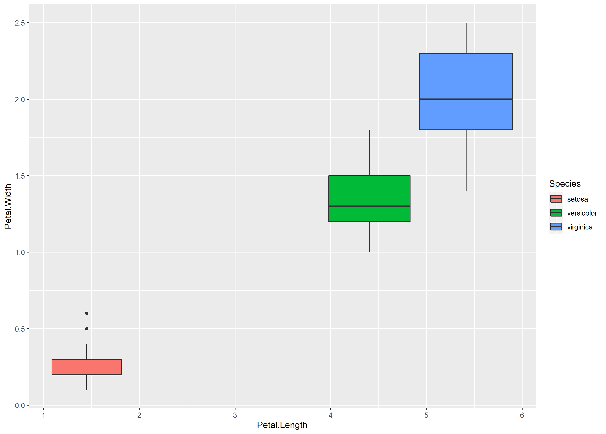
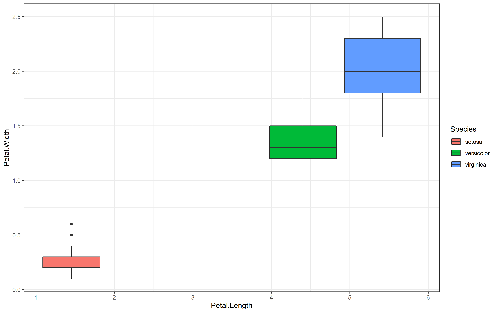
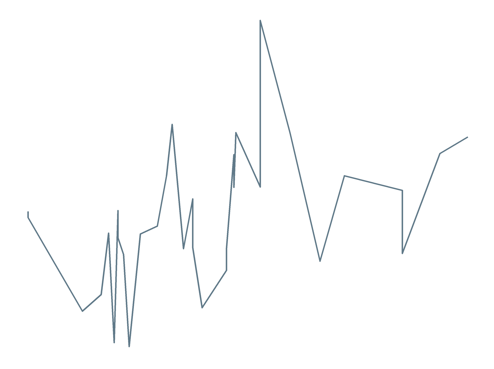
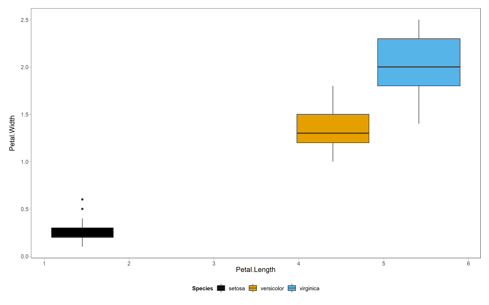
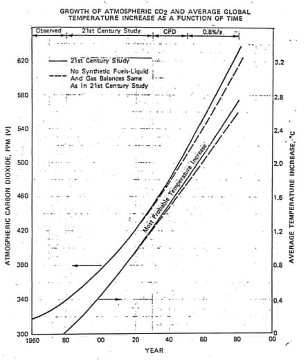

| title: My ggplot themes manifesto author: Kapur date: ‘2020-05-03’ slug: my-ggplot-themes-manifesto categories: [] tags: [] subtitle: ‘’ summary:’‘authors: [] lastmod: ’2020-05-03T14:13:36-07:00’ featured: yes image: placement: 2 focal_point: “” preview_only: false |
| projects: [] |
A few months ago I tweeted about the value of creating custom ggplot2 themes for easily synchronizing the look of all your figs for a given talk or manuscript. Some folks take this to another level and effectively have a personal aesthetic (see what I did there) that they use across their work, which I find compelling. I am obviously not a graphic designer, but I love beautiful plots, and wanted to consolidate some of the best resources + starter tips for others here. These range from out-of-the-box default themes within the ggplot2 package itself, to those made by others, to resources you can use to make your own more (or less) from scratch.
This is the ggplot2 default. Can we just agree that the grey background with nursery colors is not cute? I think Hadley did this on purpose to encourage us to find alternatives.
 Here are some themes that come pre-loaded in the ggplot2 package that you can invoke without installing anything else. They seem to follow the rule of subtraction – fewer gridlines, less borders, you get the idea.
Already loads better without that nasty grey background.
 # 3 theme_minimal()
I actually prefer the bounding box to the gridlines, but some folks find this spacious and clea
Next up are R packages on CRAN and/or Github. If you are like me, you need a pretty compelling reason to download someone’s random Github package purely for plotting needs – doubly so if the function of interest is buried within a massive package with a different purpose (I’m looking at you, oceanography). That said, here are some that I think are definitely worth adding to your toolkit.
To quote my friend/colleague, “Sean Anderson is the GOAT”. He has brought the law of subtraction to the max with this one, which is great for presentations and homework assignments. I only wish the axis and legend text were larger (but more on how one could fix that below).
Installing this is a heavier lift due to the required fonts, but I really like the light/dark possibilities here and the emphasis on nice typefaces. Would recommend for presentations exclusively. The one issue I have is that the dark version does not automatically lighten the box borders, something I have tried to fix in my personal versions (see below).
This is maintained by the ggplot2 folks and has lots of useful themes worth exploring. My favorite is solarized, which also has a light/dark option. I typically use the solarized-dark css from xaringanthemer for my slides, so popping in ggthemes::theme_solarized_2(light = FALSE) guarantees my figures will match nicely.
ggthemes also has a theme called “solid” which is literally just a background and nothing else, a la sparklines, if you are…chic?
 I mentioned the issue of avoiding package-burden if you’re just interested in a nice plotting function. Relatedly, sometimes another person has already made a cool ggtheme that would be perfect, if only the font were bigger/colors brighter/legend placed differently. That leads me to the most involved, yet most rewarding approach, which is to write and save your own ggplot themes! I have compiled all my faves into a new package called kaplot, which includes the original theme_black and theme_mk() which I had placed on kaputils previously. Since kaputils is more of a simulation and data science toolkit (for me), I wanted a lighterweight pacakge with only my plotting stuff. The material ranges from mostly original to downright plagarized, and basically involves me tweaking pre-existing themes to be exactly as I’d like them. Going forward I will probably make themes in there specific to given publications so they can be quickly re-done. Here are some highlights:
kaplotMy tweak to ggthemes which ensures that legend key backgrounds are not white. I use the dark version of this (light = FALSE) for presentations.
I have now implemented this rather complicated method to override the default color palette to the cbbPalette, which is colorblind friendly and greyscale-compatible. The whole goal is to reduce the number of lines I need to write for each figure. See below for a final note on color. 
I kind of like old-school figures that look like an engineering professor made them, like the one below. I put out a call on twitter to sort out how this can be done! Stay tuned… 
Aside from cbbPalette, I have several go-to color palettes from across the web which I regularly use. Fortunately the viridis() pal is default with ggplot2, but there were a couple others I wanted to bring in automatically. These include Jake Lawlor’s PNWColors.
Now the palettes are pre-loaded and can be called just like viridis.